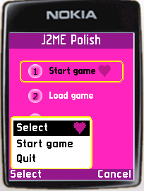
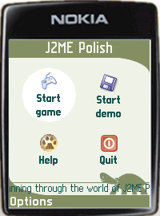

|
|
|
| These screenshots show the optional GUI of J2ME Polish in action.
These pictures show the same application with different
designs on a Nokia Series 60 phone. Absolutely no changes were made in the source code
of the application. Please note the usage of a bitmap font on
the screenshot on the right: with J2ME Polish you can use
bitmap fonts instead of the usual "system", "proportional" or "monospace" fonts.
You can convert and use any true type font with the provided font-editor.
|
||
| The same application on a Motorola V600 phone.
|
||
| Once more the same application - this time on a Sony Ericsson K700 phone.
|
||
J2ME Polish makes it easy to adjust the design to specific devices or
device groups. You can try completely different designs just
by using a different resources-folder. For the application
screen-shots a simple application is used, which just shows
a main menu with the standard javax.microedition.lcdui.List
class.
|
 |
| The enough design uses two columns and a transparent menu-bar.
Show polish.css Download resources. |
|
|
 |
| The barbie design uses the after attribute for the focused-style.
Show polish.css Download resources. |
|
J2ME Polish supports all MIDP items, e.g. the choice-group and the gauge item:
The text- and date-input fields can be layouted to get a clear and good looking form.
This example uses - as every other one on this page - only the standard MIDP GUI widgets.
The programmer does not need to learn a new API.

In this example the label and the input text are set on one height, this makes the design
much clearer and calm.
The GUI J2ME Polish can be extended easily, so you can use custom items,
backgrounds and borders in your application:
